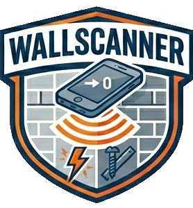

Leidingzoeker & Stud Finder via Magnetometer
APK downloaden Android 8.0+ · ~1,4 MB · 100% offlineNooit meer blind boren. WallScanner verandert je smartphone in een leidingzoeker en helpt je om elektrische leidingen, metalen balken en buizen achter de muur te vinden — voordat je de boor erin zet.
Meet het magnetisch veld van je telefoon en toont afwijkingen direct als delta in microtesla.
Duidelijke weergave in groen, geel en rood — je ziet in één oogopslag wat er achter de muur zit.
In het rode gebied trilt de telefoon automatisch. Een geigerteller-toon wordt sneller naarmate het signaal sterker is.
Het signaalverloop van de laatste seconden maakt pieken zichtbaar tijdens het scannen van de muur.
Één druk neutraliseert het aardmagnetisch veld — daarna slaat alleen echt metaal de meter uit.
Geen internetverbinding, geen reclame, geen dataopslag. Werkt overal.
APK downloaden — tik op de knop hierboven.
Installatie toestaan — Android vraagt om "Installatie uit onbekende bronnen". Activeer dit voor je browser.
Openen — start de app, houd de achterkant tegen de muur en stel het nulpunt in.
Scannen — beweeg langzaam over de muur en let op de uitslag.
Deze app wordt aangeboden zonder enige garantie; gebruik is geheel op eigen risico. De magnetometer van een smartphone is geen gecertificeerd meetinstrument — niet alle leidingen of objecten produceren een meetbaar signaal en meetfouten zijn mogelijk. De ontwikkelaar aanvaardt geen enkele aansprakelijkheid voor schade door boorwerkzaamheden of het vertrouwen op meetresultaten. Controleer voor elk boorgat de bouwplannen en raadpleeg bij twijfel een vakman.